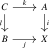
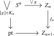
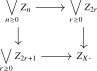
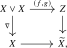
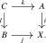
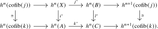
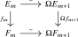

We now prove the Brown representability theorem stated in Theorem 3.2.6. The proof has two parts. We first prove Brown’s general criterion for a set-valued functor on connected pointed animae. We then apply it degreewise to a reduced cohomology theory and assemble the representing animae into a spectrum.
3.4.1 The representability theorem
Write \(\An _{*,\geq 1}\) for the full subcategory of \(\An _*\) spanned by the connected pointed animae. Since \(\pi _0\) preserves colimits, this subcategory is closed under wedges and pushouts.
Definition 3.4.1 (Brown’s conditions). Let \[ F\colon \Ho (\An _{*,\geq 1})\catop \longrightarrow \Set \] be a functor. We say that:
- (1)
-
The functor \(F\) is representable if it is naturally isomorphic to \([-,Z]_*\) for some \(Z\in \An _{*,\geq 1}\);
- (2)
-
The functor \(F\) satisfies the wedge axiom if, for every small collection \((X_i)_{i\in I}\) of connected pointed animae, the canonical map \[ F\left (\bigvee _{i\in I}X_i\right )\longrightarrow \prod _{i\in I}F(X_i) \] is a bijection;
- (3)
-
The functor \(F\) satisfies the Mayer–Vietoris property if every pushout square

in \(\An _{*,\geq 1}\) induces a surjection \[ (i^*,j^*)\colon F(X)\longrightarrow F(A)\times _{F(C)}F(B). \]
The wedge axiom for the empty collection implies that \(F(\pt )\) is a singleton. It also gives the values of \(F\) on suspensions an algebraic structure which will be used in the proof.
Remark 3.4.2. Suppose that \(F\) satisfies the wedge axiom. The cogroup structure on \(\Sigma X\) from Remark 2.4.21 makes \(F(\Sigma X)\) a group: the pinch map induces its multiplication, while the collapse and reflection maps induce its unit and inverses. The two cogroup structures on \(\Sigma ^2X\) agree by the Eckmann–Hilton argument, so \(F(\Sigma ^2X)\) is an abelian group. A natural transformation between two functors satisfying the wedge axiom preserves these group structures.
Theorem 3.4.3 (Brown representability, Brown (1962)). A functor \(F\colon \Ho (\An _{*,\geq 1})\catop \to \Set \) is representable if and only if it satisfies the wedge axiom and the Mayer–Vietoris property.
For a connected pointed anima \(Z\) and an element \(\xi \in F(Z)\), the Yoneda lemma associates to \(\xi \) a natural transformation \[ T_\xi \colon [X,Z]_*\longrightarrow F(X), \qquad [f]\longmapsto f^*(\xi ). \] Brown’s construction produces a representing object by successively improving the behavior of this transformation on spheres.
Definition 3.4.4 (Universal element). Let \(n\geq 1\). An element \(\xi \in F(Z)\) is \(n\)-universal if \[ T_\xi \colon [S^k,Z]_*\longrightarrow F(S^k) \] is a bijection for \(1\leq k<n\) and a surjection for \(k=n\). It is universal if this map is a bijection for every \(k\geq 1\).
Proposition 3.4.5 (Universal approximation). Let \(F\) satisfy the wedge axiom and the Mayer–Vietoris property. For every connected pointed anima \(X\) and every \(\eta \in F(X)\), there are a connected pointed anima \(Z_X\), a pointed map \(f_X\colon X\to Z_X\), and a universal element \(\xi _X\in F(Z_X)\) such that \(f_X^*(\xi _X)=\eta \).
Proof. Step 1: Constructing increasingly universal elements. We construct a sequence \[ X=:Z_0\xrightarrow {f_0}Z_1\xrightarrow {f_1}Z_2\longrightarrow \cdots \] and elements \(\xi _n\in F(Z_n)\) such that \(f_n^*(\xi _{n+1})=\xi _n\), the element \(\xi _n\) is \(n\)-universal for \(n\geq 1\), and \(T_{\xi _n}\) is surjective on \(S^k\) for every \(k\geq 1\).
Set \(\xi _0:=\eta \) and define \[ Z_1:=X\vee \bigvee _{m\geq 1}\ \bigvee _{\gamma \in F(S^m)}S^m. \] By the wedge axiom, there is a unique element \(\xi _1\in F(Z_1)\) whose restriction to \(X\) is \(\eta \) and whose restriction to the sphere indexed by \(\gamma \in F(S^m)\) is \(\gamma \). The inclusion of that sphere shows that \(T_{\xi _1}\) is surjective on \(S^m\) for every \(m\geq 1\). In particular, \(\xi _1\) is \(1\)-universal.
Suppose now that \(n\geq 1\) and that \((Z_n,\xi _n)\) has been constructed. By Remark 3.4.2, the map \[ T_{\xi _n}\colon [S^n,Z_n]_*\longrightarrow F(S^n) \] is a group homomorphism. Let \(K_n\) denote its kernel. Choose a representative \(g\colon S^n\to Z_n\) of every class \([g]\in K_n\), and form the pushout

The restrictions of \(\xi _n\) to all the attaching spheres are zero. The Mayer–Vietoris property therefore supplies an element \(\xi _{n+1}\in F(Z_{n+1})\) satisfying \(f_n^*(\xi _{n+1})=\xi _n\).
The map \(T_{\xi _{n+1}}\) remains surjective on every sphere, since \(T_{\xi _n}\) is surjective and \(\xi _n=f_n^*\xi _{n+1}\). Attaching \((n+1)\)-cells induces bijections \[ [S^k,Z_n]_*\xrightarrow {\cong }[S^k,Z_{n+1}]_* \] for \(k<n\), so \(\xi _{n+1}\) remains \(n\)-universal. Finally, every map \(S^n\to Z_{n+1}\) factors up to homotopy through \(Z_n\). If its class lies in the kernel of \(T_{\xi _{n+1}}\), a lift to \(Z_n\) lies in \(K_n\) and hence becomes null-homotopic after the corresponding cell is attached. Thus \(T_{\xi _{n+1}}\) is injective on \(S^n\), proving that \(\xi _{n+1}\) is \((n+1)\)-universal.
Step 2: Passing to the limit. Set \[ Z_X:=\colim _nZ_n. \] The mapping-telescope description from Lemma 2.4.29 gives a pushout square

On the summand \(Z_n\), the two maps are the identity and the transition map to the adjacent stage, assigned to the even and odd target wedges according to the parity of \(n\). The relations \(f_n^*(\xi _{n+1})=\xi _n\), together with the wedge axiom and the Mayer–Vietoris property, therefore produce an element \(\xi _X\in F(Z_X)\) restricting to \(\xi _n\) on every stage. In particular, the composite \(f_X\colon X=Z_0\to Z_X\) satisfies \(f_X^*(\xi _X)=\eta \).
For a fixed \(k\geq 1\), the map \(Z_n\to Z_X\) is obtained by attaching cells of dimension at least \(n+1\). Hence Remark 3.3.6 shows that \[ [S^k,Z_n]_*\longrightarrow [S^k,Z_X]_* \] is a bijection once \(n>k\). Since \(\xi _n\) is \(n\)-universal, \(T_{\xi _X}\) is consequently a bijection on \(S^k\). Thus \(\xi _X\) is universal. □
Proof of Theorem 3.4.3. If \(F\cong [-,Z]_*\) is representable, the wedge axiom follows from the universal property of coproducts. Mapping a pushout into \(Z\) gives a pullback of mapping animae. A pair of homotopy classes whose restrictions to the intersection agree can be represented together with a homotopy between those restrictions, and therefore lifts to a point of this pullback. This proves the Mayer–Vietoris property.
Conversely, suppose that \(F\) satisfies Brown’s conditions. Apply Proposition 3.4.5 to \(X=\pt \) and the unique element of \(F(\pt )\). We obtain a connected pointed anima \(Z\) and a universal element \(\xi \in F(Z)\). We claim that \[ T_\xi \colon [X,Z]_*\longrightarrow F(X) \] is a bijection for every connected pointed anima \(X\).
For surjectivity, let \(\eta \in F(X)\) and let \(\widetilde \eta \in F(X\vee Z)\) correspond under the wedge axiom to \((\eta ,\xi )\). Applying Proposition 3.4.5 to \((X\vee Z,\widetilde \eta )\) produces a universal element \(\widetilde \xi \in F(\widetilde Z)\) and a map \(X\vee Z\to \widetilde Z\) carrying \(\widetilde \xi \) to \(\widetilde \eta \). Its restriction \(g\colon Z\to \widetilde Z\) induces isomorphisms on all positive homotopy groups because both \(\xi \) and \(\widetilde \xi \) are universal. Since both animae are connected, \(g\) is an isomorphism by Proposition 2.4.22. Composing the restriction \(X\to \widetilde Z\) with an inverse of \(g\) gives a class in \([X,Z]_*\) which maps to \(\eta \).
For injectivity, suppose that \(f,g\colon X\to Z\) satisfy \(f^*\xi =g^*\xi =: \eta \). Form the pushout

where \(\nabla \) is the fold map. The Mayer–Vietoris property gives an element \(\widetilde \eta \in F(\widetilde X)\) restricting to \(\xi \) on \(Z\) and to \(\eta \) on \(X\). Apply Proposition 3.4.5 to \((\widetilde X,\widetilde \eta )\). As in the surjectivity argument, the resulting composite \(Z\to \widetilde X\to \widetilde Z\) is an isomorphism because it carries one universal element to another. The pushout square then shows, after composing with its inverse, that both \(f\) and \(g\) are homotopic to the same map \(X\to Z\). Hence \([f]=[g]\). □
3.4.2 From representing animae to spectra
We now apply the abstract theorem to reduced cohomology theories. The only condition which does not follow immediately from the axioms is the Mayer–Vietoris property.
Lemma 3.4.6. Let \((h^*,\sigma )\) be a reduced cohomology theory. For each \(n\in \Z \), the restriction \[ h^n\colon \Ho (\An _{*,\geq 1})\catop \longrightarrow \Ab \longrightarrow \Set \] satisfies the Mayer–Vietoris property.
Proof. Consider a pushout square of connected pointed animae

The pushout property gives an isomorphism \(\cofib (k)\iso \cofib (j)\). The long exact cohomology sequences of Exercise 3.1.3 therefore fit into a commutative diagram

Suppose that \(\alpha \in h^n(A)\) and \(\beta \in h^n(B)\) satisfy \(k^*\alpha =l^*\beta \). The boundary of \(\beta \) vanishes, since its image under the right-hand isomorphism is the boundary of \(l^*\beta =k^*\alpha \). Hence \(\beta \) lifts to some \(\gamma _0\in h^n(X)\). The element \(\alpha -i^*\gamma _0\) lies in the kernel of \(k^*\), so it comes from \(h^n(\cofib (k))\). Transporting a preimage across the left-hand isomorphism and then mapping it to \(h^n(X)\) gives an element \(\gamma _1\) whose restriction to \(B\) vanishes and whose restriction to \(A\) is \(\alpha -i^*\gamma _0\). Thus \(\gamma _0+\gamma _1\) restricts to \((\alpha ,\beta )\), proving the required surjectivity. □
Proof of Theorem 3.2.6. Let \((h^*,\sigma )\) be a reduced cohomology theory. For each \(m\geq 0\), the restriction of \(h^m\) to connected pointed animae satisfies the wedge axiom by definition and the Mayer–Vietoris property by Lemma 3.4.6. The abstract Brown representability theorem, Theorem 3.4.3, gives a connected pointed anima \(Y_m\) and a natural isomorphism \[ h^m(X)\cong [X,Y_m]_* \] on connected pointed animae.
Set \[ E_m:=\Omega Y_{m+1}\qquad (m\geq 0). \] Since \(\Sigma X\) is connected for every pointed anima \(X\), the suspension isomorphism gives natural isomorphisms \[ h^m(X)\cong h^{m+1}(\Sigma X)\cong [\Sigma X,Y_{m+1}]_*\cong [X,E_m]_* \] for every pointed anima \(X\). Thus \(E_m\) represents \(h^m\) on all of \(\An _*\). The same calculation shows that \(\Omega E_{m+1}\) also represents \(h^m\). The Yoneda lemma therefore supplies an isomorphism \[ E_m\iso \Omega E_{m+1} \] compatible with the given suspension isomorphism. These isomorphisms make \((E_m)_{m\geq 0}\) into a spectrum \(E\). The representing isomorphisms identify \(h^k\) with \(\widetilde E^k\) for \(k\geq 0\), and for \(k<0\) we obtain \[ \widetilde E^k(X) =[X,\Omega ^{-k}E_0]_* \cong h^0(\Sigma ^{-k}X) \cong h^k(X). \] This proves the first assertion.
Now let \(\alpha \colon \widetilde E^*\to \widetilde F^*\) be a natural transformation commuting with suspension. For each \(m\geq 0\), the degree-\(m\) component is a natural transformation \[ [-,E_m]_*\longrightarrow [-,F_m]_*, \] so Chapterexercise 3.1 identifies it with postcomposition by a unique homotopy class of pointed maps \(f_m\colon E_m\to F_m\). Compatibility with suspension says precisely that the squares

commute in \(\Ho (\An _*)\). Choosing representatives and the corresponding homotopies gives a morphism of spectra \(f\colon E\to F\) in the sense of Definition 3.2.2. Its induced natural transformation is \(\alpha \) in nonnegative degrees, and hence in every degree by compatibility with suspension. □
Exercise 3.4.7 (Mayer–Vietoris sequence). Let \(F\colon \Ho (\An _{*,\geq 1})\catop \to \Ab \) satisfy the wedge axiom and the Mayer–Vietoris property, and consider a pushout square of connected pointed animae
Show that the cofiber of \((i,j)\colon A\vee B\to X\) is isomorphic to \(\Sigma C\), and use the coPuppe sequence to construct a long exact Mayer–Vietoris sequence \[ \cdots \to F(\Sigma X)\to F(\Sigma A)\times F(\Sigma B)\to F(\Sigma C)\to F(X)\to F(A)\times F(B)\to F(C). \] Determine the maps and signs explicitly.
Exercises
Exercise 3.1. Use the Yoneda lemma to show that for two pointed animae \(X\) and \(Y\), any natural transformation \([-,X]_* \to [-,Y]_*\) of functors \(\Ho (\An _*)\catop \to \Set \) is given by postcomposition with a unique morphism \(f\colon X \to Y\) in \(\Ho (\An _*)\).
Exercise 3.2 (Cohomology of spheres and Moore animae). Let \(\widetilde E^*\) be a reduced cohomology theory, and write \(A^q:=\widetilde E^q(S^0)\) for its coefficient groups. For an abelian group \(A\), write \(A[m]:=\ker (m\colon A\to A)\).
- (1)
-
Show that \(\widetilde E^q(S^n)\cong A^{q-n}\) for every \(q\in \Z \) and \(n\geq 0\).
- (2)
-
For \(m\geq 2\) and \(n\geq 1\), let \(M(\Z /m,n)\) be the cofiber of a degree-\(m\) map \(S^n\to S^n\). Deduce natural short exact sequences \[ 0\to A^{q-n-1}/m\to \widetilde E^q(M(\Z /m,n))\to A^{q-n}[m]\to 0. \]
Exercise 3.3 (A Moore anima). Fix integers \(m\geq 2\) and \(n\geq 1\), and let \(M(\Z /m,n)\) be the cofiber in \(\An _*\) of a degree-\(m\) map \(S^n\to S^n\). Show that \[ \widetilde H_k(M(\Z /m,n);\Z )\cong \begin {cases}\Z /m,&k=n,\\0,&k\neq n, \end {cases} \] Use Chapterexercise 3.2 to show that \[ \widetilde H^k(M(\Z /m,n);\Z )\cong \begin {cases}\Z /m,&k=n+1,\\0,&k\neq n+1. \end {cases} \] Explain why the shift between the two answers is forced by contravariance rather than by a choice of model for the cofiber.
Generated from the authoritative LaTeX source.